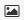

Data Sources¶
Table of Contents
A data source consists of one or more spatially referenced information contained by one of the Data Store available. MapMint supports several types of data sources in this section.
The pictograms used to illustrate the type of data source are shown in the following table.
Icon |
Type |
Point type of vector data source |
|
Line type of vector data source |
|
Vector Polygon Data Source Type |
|
|  | Raster data source |
{kind=link}
{kind=link}
vector data¶
supported formats¶
MapMint supports vector data formats listed below.
| Format | Code | ** Required Files** |
| Comma Separated Value | CSV | csv |
| ESRI Shapefile | SHP | shp,dbf,shx,prj |
| GPX | GPX | gpx |
| Mapinfo | MIF | mif |
| KML | KML | kml |
| PostgreSQL/PostGIS | PostGIS | connection PostGIS |
| Web Feature Service | WFS | connection WFS |
Note
Other formats <http://www.gdal.org/ogr/ogr_formats.html> __ borne by the bookseller OGR <http://www.gdal.org/ogr> __ can also be used with MapMint.
Refer to the table¶
For a table of a data source, click on the “arrow” icon to the right of the: ref: datasource-table-label. This causes the éffichage of the data table. An example of this table is presented below.
Once the displayed table, and if it contains a sufficient number of entities, it is possible to navigate through the different pages of the table using the buttons “Previous” and “Next” displayed on the bottom navigation the table or by clicking directly on the number of the desired page.
In case the contents of the corresponding table in your data source is not displayed correctly, refer to the section: ref: data-datasource-encoding. then you must define the encoding of your data source, using the text fields provided for this purpose and clicking the “Set” button.
Note
The dropdown list at the top left of the table allows you to display 10, 15, 20, 25 or 30 units per page
Note
Clicking on a title of a column to sort the values in ascending / descending order or alphabetically.
Define the encoding of the character table¶
MapMint use UTF-8 encoding to display the default data source tables. However, it is common for data encoded in a different system to be loaded into the data management module. In this case, it is possible to assign a different encoding system in the text fields provided for this purpose, the right of the navigation bar.
Please enter the code of the desired encoding and click on the “Refresh” from the toolbar. This results in reloading the table and its display in the desired encoding.
Examples of character encoding are listed below for your information:
| Code | Description |
| utf-8 | All Unicode international character has ASCII-compatible (English) |
| iso-8859-1 | Latin alphabet No. 1 containing 191 characters of the Latin alphabet |
| iscii | Alphasyllabaire used in India, Sri Lanka and Bangladesh |
| viscii | Vietnamese modern Latin alphabet |
| shift-jis | Syllabary writing scenic and traditional Japanese languages |
Note
Get more information about the character encoding of Wikipedia
raster data¶
supported formats¶
Mint supports raster data formats listed below.
| Format | Code | ** Required Files** |
| Arc/Info ASCII Grid | AAIGrid | asc |
| GeoTiff | GTiff | tif |
| JPEG | JPEG | jpg |
Note
On the other formats ` <http://www.gdal.org/formats_list.html>`__ Supported by the GDAL can also be used with MapMint.
Look at the histogram¶
To view the histogram of a data source, click on the “arrow” icon to the right of the: ref: datasource-table-label. This causes unfolding of the histogram, as illustrated below.
The histogram of the data source allows you to view the distribution of his / her band (s) in the pixel array.
Note
It is possible to zoom in the histogram holding your cursor and a rectangle desssinant
Bar Data source tools¶
Icon |
Action |
 |
Set access permissions for a data source |
 |
Convert a data source |
Download a data source |
|
 |
Preview a Data Source |
Open a data source in the card creation module |
|
 |
Delete a data source |
{kind=link}
{kind=link}
Access rights¶
A data source is accessible to all user groups by default. To change the permissions to access a layer, click on the corresponding icon in the: ref: datasource-table-label. This will open the window of access rights, as shown below:

Value |
Definition |
| r | The user group access to reading in bed |
| w | The user group to access the write layer |
| x | The user group to access ... |
Add Type single or multiple groups with the “Add” button, this entails adding drop-down lists in the window. Adjust the values **r ** **w ** and **x ** and then click the “Submit” button. The window closes and recording changes is stated at the top of your screen in a green headband.
Convert a data source¶
Data conversion is covered in part:: ref: data-processing.
downloading¶
To download a data source on your computer, just click on the corresponding icon in the: ref: datasource-table-label. This causes the direct download of the data, stored in a .zip file
preview¶
To preview a data source, please click on the corresponding icon in the: ref: datasource-table-label, it shows a preview bubble as shown below.
** Source vector data** |
** Source Raster data ** |
 |
 |
Note
vector data sources are previewed with a default style (purple filling and dark gray border)
Warning
External WMS type of data sources do not have the preview functionality
suppression¶
To delete a data source, please click on the corresponding icon in the: ref: data source-table-label. This opens the blanking window illustrated below.
deeds
Click the “Delete” button to delete the data. The window closes and the deletion of the data source is stated at the top of your screen in a green headband.
Warning
The use of this feature remove the source of data storage space and removes the physical data sets on the server. This action is permanent and irreversible.
Opening¶
To open a data source in the ../maps /index, please click on the corresponding icon in the Bar Data source tools. This causes the opening of the data source in the ../ maps/index. The data source is added to the root of the tree layers in a project and Untitled_0 shown with the default style.
Note
After loading the data source, it is recommended to save the project Untitled_0 under an appropriate name